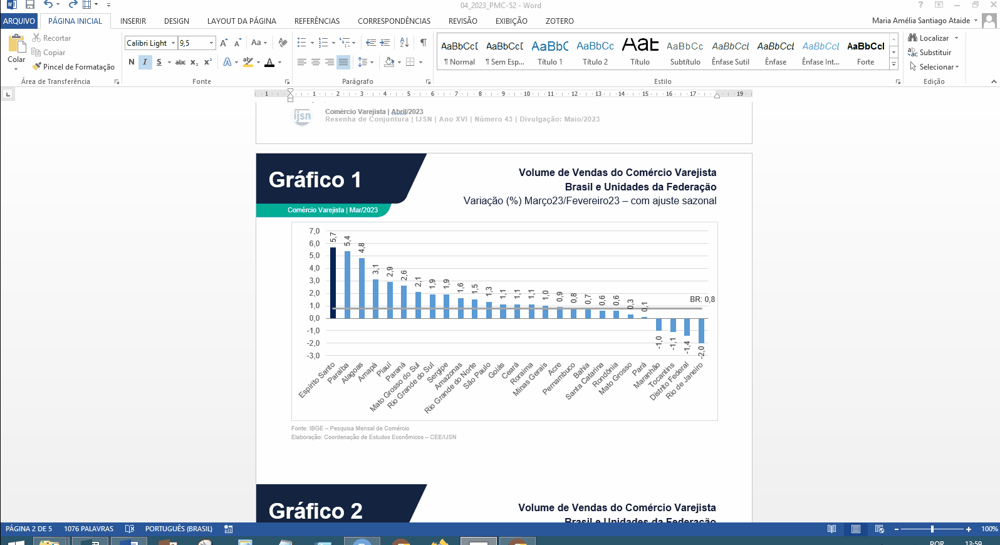
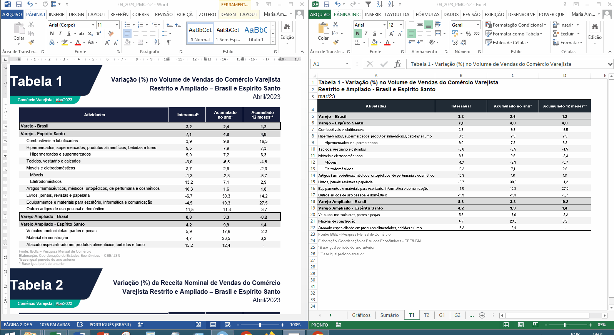
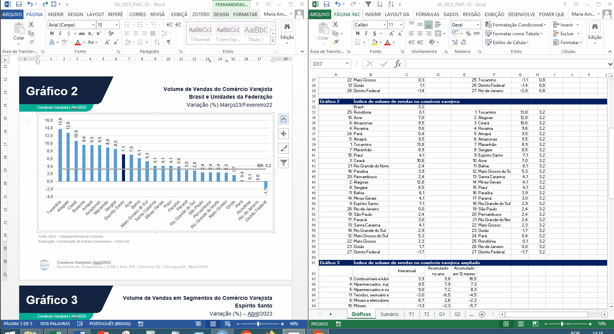
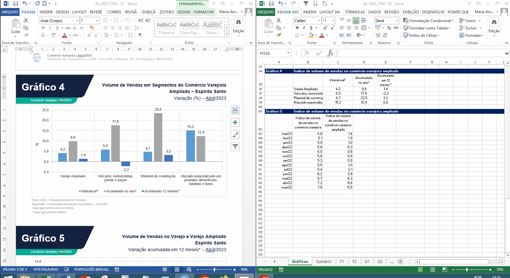

Tutorial de atualização do Word de Comércio Varejista
Cabeçalho
- No cabeçalho da resenha, atualize o mês de referência e o mês de divulgação. Feito isso, os títulos que contém meses de tabelas e gráficos, geralmente, são atualizados automaticamente (Figura 1).

- Nos cabeçalhos dos gráficos e tabelas o mês de referência também precisará ser atualizado. Atualize um dos cabeçalhos e os demais se atualizaram automaticamente (Figura 2).

Tabelas
Para atualizar as tabelas, copie os valores da aba “T1” e “T2” do Excel e cole nas tabelas 1 e 2 do arquivo Word (Figura 3).

Gráficos
Para atualizar os gráficos, clique sobre a figura desejada e em “Editar Dados”, selecione a opção “Editar dados no Excel 2013”, se estiver usando o Office 2013. Feito isso, abrirá um arquivo Excel vinculado ao arquvio Word. Neste arquivo, cole os dados copiados da aba “Gráficos” do arquvo Excel da resenha. Atente-se para sempre copiar os dados que já estão ordenados em ordem decrescente. Após colar os dados, basta fechar a janela do arquivo Excel vinculado e os valores do gráfico se atualizarão automaticamente ( Figura 3, Figura 4, Figura 5, Figura 6, Figura 7 e Figura 8).
Nos gráficos de ranking, lembrar de pintar a barra do Espírito Santo de azul escuro e as barras das demais UFs de azul claro.
Nos gráficos de comparação interanual, é necessário substituir os nomes dos meses de forma manual.





Procedimentos finais
Após atualizar todas as tabelas e gráficos da resenha, redija o texto e encaminhe para a revisão do técnico escalado para revisão (a escala de revisão pode ser encontrada na descrição do grupo de WhatsApp da CEE). Ao receber a resenha revisada, faça as alterações necessárias, salve o arquivo em PDF e envie para comunicação (comunicacao@ijsn.es.gov.br) e editoração (editoracao@ijsn.es.gov.br), com cópia para a coordenadora. Antes de encaminhar, certifique-se de ter ocultado as abas “tabela8880”, “tabela8881”, “tabela8883” e “Gráficos”.
Lembre-se de substituir o nome do autor em “Elaboração” no rodapé da primeira página da resenha.